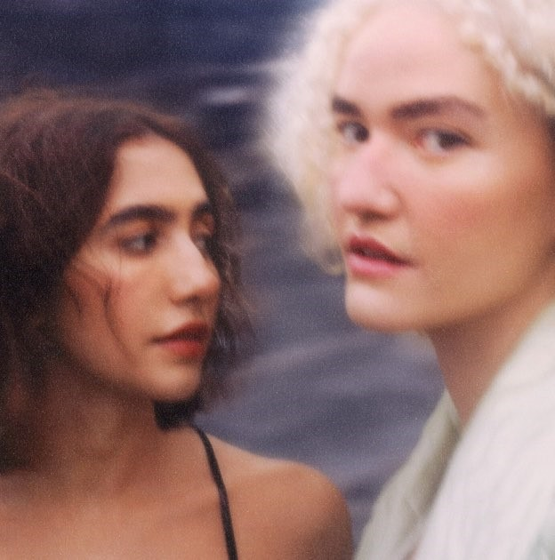

A dupla Anavitória é formada pelas cantoras e compositoras Ana Caetano e Vitória Falcão, duas jovens talentosas que se destacam na música brasileira com um estilo que mistura pop, MPB (Música Popular Brasileira) e folk, com toques de música alternativa. Elas se conheceram na cidade de Araguaína, no Tocantins, e sua história musical tem muito a ver com a busca por um som autêntico e intimista, que conquista uma legião crescente de fãs.
História
Ana nasceu em 5 de outubro de 1994 e sempre teve interesse pela música. Ela começou a tocar violão aos 15 anos e passou a experimentar com suas próprias composições, influenciada pelo sertanejo predominante na região, além de artistas da MPB e do folk.
Vitória, por sua vez, veio ao mundo em 2 de maio de 1995 e nem sonhava em seguir carreira musical durante o começo da vida, apesar de ter crescido em uma família apaixonada por música.
A história de Anavitória começa em Araguaína, no Tocantins, com Ana Caetano e Vitória Falcão a se conhecerem na escola e a gravarem covers no YouTube em 2013, durante a faculdade. Elas foram descobertas pelo produtor Felipe Simas em 2014 após um cover de "Um Dia Após o Outro" de Tiago Iorc. Em 2015, Anavitória lançou seu primeiro EP, produzido por Tiago Iorc, que contava com músicas originais e regravações. O sucesso da dupla rapidamente se espalhou pelo Brasil, e elas iniciaram sua primeira turnê.
Carreira
A carreira de Anavitória se desenrolou de maneira orgânica, com elas lançando músicas e álbuns que misturam uma sonoridade leve e melancólica, com letras sensíveis e poéticas. A dupla ficou conhecida por um estilo intimista e cheio de emoções, muitas vezes tratando de temas como relacionamentos, autodescoberta e a busca pela felicidade.
O EP Anavitória foi lançado em 2 de abril de 2015 e conta com duas músicas próprias ("Singular" e "Chamego Meu") e duas regravações ("Cores", da mineira Lorena Chaves, e "Tententender", do duo gaúcho Pouca Vogal). O vídeo de uma performance ao vivo de "Singular" foi publicado no YouTube e atraiu a atenção do público para o trabalho do duo.
Após o sucesso com o EP de estreia, o duo lançou seu primeiro álbum, intitulado Anavitória, que conta com distribuição da gravadora Universal Music. Misturando música interiorana, MPB e Pop, elas costumam definir seu próprio som como pop. Logo em seguida ao lançamento do disco, o duo iniciou sua primeira turnê por várias cidades do Brasil.A canção "Agora Eu Quero Ir" fez parte da trilha sonora da telenovela brasileira Malhação: Pro Dia Nascer Felize a canção "Dengo" entrou na trilha sonora da novela Pega Pega.
Em abril de 2017, o duo lançou a canção "Fica", em parceria com a dupla sertaneja Matheus & Kauan, lançada com terceiro single do álbum, e em julho, participaram da canção "Linda", do rapper brasileiro Projota.Em 1º de agosto de 2017, o duo recebeu seu primeiro disco de ouro pelas 40 mil cópias vendidas do álbum.O certificado foi entregue ao vivo durante a exibição do programa
Música Boa Ao Vivo, do canal Multishow, apresentado pela cantora Anitta. Anavitória já entrou para a lista Brazil Top 50 do Spotify com três músicas: "Agora Eu Quero Ir", "Trevo (Tu)" e "Fica".Em 2019, durante o show na Fundição Progresso, o primeiro álbum do duo recebeu a certificação de disco de diamante, vendendo mais de 300.000 cópias do álbum.
Em 11 de outubro de 2017, a dupla lançou o EP Anavitória Canta para Pessoas Pequenas, Pessoas Grandes e Não Pessoas Também, em comemoração ao Dia das Crianças. Em 16 de novembro de 2017, ganharam o Grammy Latino na categoria Melhor Canção em Língua Portuguesa pela canção "Trevo (Tu)" e o álbum Anavitória recebeu uma indicação na categoria Melhor Álbum Pop Contemporâneo em Língua Portuguesa, perdendo para Troco Likes Ao Vivo (2016), de Iorc.
Álbuns
Anavitória (2016)
O primeiro álbum da dupla é o auto-intitulado "Anavitória", lançado em 2016. O álbum foi muito bem recebido pela crítica e pelo público, com músicas que falam de amor, superação e busca por uma conexão emocional profunda. Esse trabalho foi um divisor de águas na carreira das cantoras.
O Tempo É Agora (2018)
Com esse álbum, a dupla deu um passo a mais na sua maturidade artística. "O Tempo É Agora" é mais maduro e experimental, misturando influências de jazz, folk e até pop eletrônico, sem perder a essência que a tornou famosa. O álbum tem músicas como "Trevo (Tu)" e "Ai,Amor", que rapidamente se tornaram hits.
N (2019)
O álbum "N", terceiro álbum da dupla Anavitória, N foi arremessado nas plataformas de áudio em 29 de novembro de 2019, sem aviso prévio. Ainda assim, não chega a ser surpresa a opção de Ana Caetano e Vitória Falcão por apresentar disco com músicas do cancioneiro de Nando Reis. No caso, oito canções entremeadas com três vinhetas que totalizam as 11 faixas do álbum N.
Cor (2020)
Com 14 músicas,Cor é álbum de produção musical sobressalente. O arranjo de Terra (Ana Caetano), por exemplo, exemplifica a evolução de Anavitória nesse quesito. Tanto que há, em Cor, faixas em que o arranjo e a produção musical soam mais interessantes do que a canção em si, caso de Tenta acreditar (Ana Caetano e João Ferreira).
Esquinas (2024)
Quarto álbum autoral gravado por Anavitória em estúdio com músicas inéditas, Esquinas chegou ao mundo na quinta-feira, 12 de dezembro, com 12 novas composições e com discurso pronto para enfatizar a “maturidade” da dupla através de textos assinados por quatro críticos musicais e enviados à imprensa como material promocional do disco.

Prêmios e indicações
Ano
Categoria
Indicação
Resultado
2017
Melhor Canção em Língua Portuguesa
Trevo (Tu)
Venceu
Melhor Álbum Pop Contemporâneo em Língua Portuguesa
Anavitória
Indicadas
2019
O Tempo É Agora
Venceu
2020
N
Indicadas
2021
Cor
Venceu
Melhor Canção em Língua Portuguesa
Lisboa
Venceu
Turnês
Você já se sentiu abraçado por uma música? Já fechou os olhos e deixou uma letra te atravessar como se fosse feita pra você?
É isso que acontece em um show da ANAVITÓRIA.
Mais do que um show, é um encontro.
Com você mesmo, com quem te acompanha, com as memórias que só a música sabe despertar.
É cantar em coro com desconhecidos e sair de lá com o coração mais leve, cheio de poesia, de cor, de vida.
A turnê nova está chegando, e essa é a sua chance de viver tudo isso ao vivo.
De ouvir “Tenta Acreditar”, “Ai, Amor” e tantas outras canções que já fazem parte da sua história… mas agora com a energia que só um palco pode trazer.
Não é só sobre música.
É sobre sentir.
Sobre se permitir parar um pouco e simplesmente… viver.
Se você já canta cada verso de Anavitória como se fosse parte da sua história, sente o coração aquecer com a leveza das vozes delas e encontra abrigo nas letras que parecem escritas pra você, então tá mais do que na hora de virar fã de carteirinha! Ser fã oficial de Anavitória é mergulhar ainda mais fundo nesse universo cheio de poesia, amor e verdade. É ter acesso a momentos únicos, conteúdos especiais e sentir que faz parte de algo maior, junto com outras pessoas que também se emocionam com cada acorde. Vem viver isso de perto e mostrar todo o amor que você sente — o duo mais doce da música brasileira merece esse carinho, e você merece fazer parte desse abraço coletivo que é ser fã de Anavitória.
O duo ANAVITÓRIA, formado por Ana Caetano e Vitória Falcão, comemora uma década de trajetória musical em 2024 com o lançamento do aguardado álbum “Esquinas”. Disponível desde quinta-feira (12), o disco é uma reflexão profunda sobre os 30 anos de vida e carreira, abordando temas como os amores efêmeros e os corações partidos acumulados ao longo do tempo.
O álbum apresenta uma sonoridade complexa e intensa, que mistura psicodelia dos anos 1970 com o rock oitentista, criando um caldeirão de referências sonoras. As músicas de “Esquinas” exploram não só o lado emocional da passagem do tempo, mas também um grito de liberdade e o encontro com a própria identidade artística, tanto em termos sonoros quanto estéticos.
“Esquinas” marca uma nova fase para o duo, que não lançava um álbum completo desde “Cor”, de 2021. As faixas, com letras e temas que exploram a maturidade e o autoconhecimento, incluem colaborações especiais, como a participação de Jorge Drexler na música “Não Sinto Nada”.